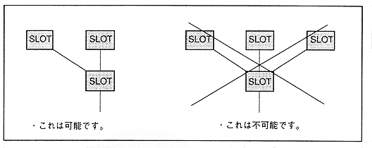
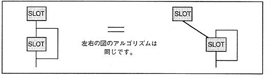
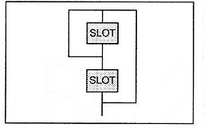

Figure 4.42: Number of slots connected

As shown in Figure 4.42, modulation is possible up to two. In addition, considering that the modulation data (source) is brought from the sound stack, SCSP can be configured with FM configurations as shown in Figure 4.43, Figure 4.44, Figure 4.45, and Figure 4.46.
(Fig.4.43 shows a configuration in which modulation is applied to a slot in which self-feedback is applied, in another slot, Fig.4.44 shows multi-stage feedback including a plurality of slots, Fig.4.45 shows combined feedback combining multi-step feedback and self-feedback, Fig.4.46 Represents a complex modulation type that modulates each slot with multistage feedback in a different slot.)
Figure 4.43 Self-feedback modulation

Figure 4.44 Multistage feedback  | Figure 4.45 Composite feedback  |